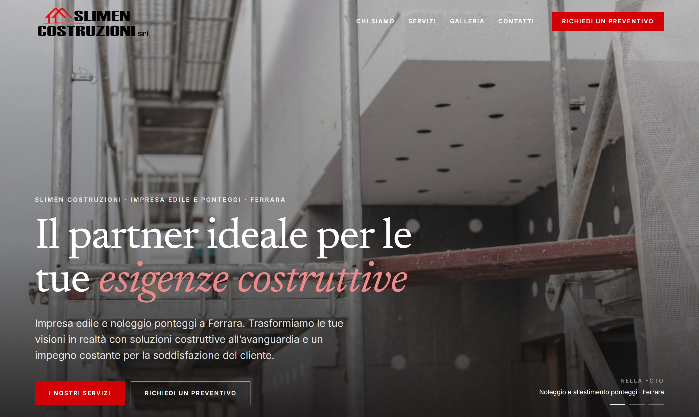
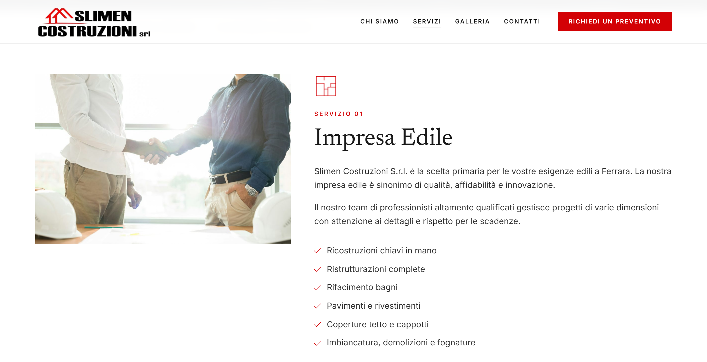

Slimen Costruzioni S.r.l. · Ferrara
Il sito attuale (slimencostruzionisrl.com) e una pagina WordPress con il tema di serie: nome, servizi, recapiti, sede e foto ci sono, ma dispersi in un modello grafico generico. Il nuovo sito parte da quei dati reali, li riordina e li inserisce in un sito completo, con una identita visiva ricavata dal logo dell'azienda: il rosso del marchio e il nero, una coppia tipografica serif piu sans, e un insieme di componenti ripetuti in ogni pagina.

L'apertura del nuovo sito: titolo con accento in corsivo rosso, foto reale di cantiere a tutta pagina, occhiello e bottoni del marchio. Le foto sono quelle del sito attuale (vanno sostituite con foto dei lavori in alta risoluzione).
1 · Questa introduzione
2 · L'identita visiva: palette, contrasti e tipografia
3 · Il sito: sezioni, contenuti e scelte fatte durante la costruzione
4 · Qualita tecnica e cosa resta da completare
Tutti i testi sono presi dal sito attuale, senza inventarne di nuovi. Dove un dato non era recuperabile (per esempio la partita IVA) il sito lo segna come "da fornire" invece di riempirlo a caso. Palette, tipografia e componenti seguono il logo, non un tema preconfezionato.
L'identita visiva
L'identita poggia su tre cose coordinate: la palette presa dal logo, una coppia tipografica (serif per i titoli, sans per il testo) e un set di componenti ripetuti in tutte le pagine. Il tema WordPress di partenza usava invece colori di serie (blu, grigi, un verde dal plugin dei cookie) scollegati dal marchio: sono stati scartati.
Contrasti misurati (WCAG 2.1, soglia AA 4.5:1)
| Combinazione | Uso | Rapporto | Esito |
|---|---|---|---|
| AaRosso #D30105 su bianco | link e testo in evidenza | 5.56 : 1 | AA |
| AaBianco su bottone rosso | "Richiedi un preventivo" | 5.56 : 1 | AA |
| AaRosso schiarito su nero | occhielli e testi su fondo scuro | 7.20 : 1 | AAA |
| AaRosso di marca su nero | scartato: sotto soglia | 3.13 : 1 | No |
| AaTesto #333333 su bianco | paragrafi | 12.63 : 1 | AAA |
| AaGrigio #6B6B6B su bianco | didascalie | 5.33 : 1 | AA |
Tipografia
Il sito
Il sito e stato ridotto alle sezioni che l'azienda ha davvero, riempite con i testi del sito attuale. Niente pagine finte: le aree che non esistevano (team, portfolio progetti, pagine "metodo") sono state tolte.

La pagina Servizi: occhiello rosso, titolo serif, elenco con spunta rossa e foto coerente col servizio.
Palette ricavata dal logo. Rosso #D30105 e nero. Sono stati scartati i colori del tema WordPress (blu, grigi, il verde del plugin dei cookie) perche scollegati dal marchio.
Rosso leggibile anche sui fondi scuri. Il rosso di marca su nero e a 3.13:1 (sotto soglia): per i testi su fondo scuro si usa il rosso schiarito #EF8A8C a 7.20:1.
Logo reale nell'header e nel footer. Nel footer scuro e posato su una targhetta bianca cosi resta leggibile. Foto dei servizi messe in coerenza (ponteggi sui servizi ponteggi).
Codice ripulito. Nomi di file, nome del pacchetto e commenti di altri progetti sono stati tolti: nel codice non resta alcun dato di altri clienti (controllo automatico su 67 file).
Qualita tecnica
Veloce: immagini servite in AVIF e WebP alla misura giusta, caricamento differito, font precaricati.
Accessibile: contrasti AA e AAA, link "salta al contenuto", focus visibile da tastiera, testo alternativo sulle immagini.
Trovabile: titolo e descrizione per ogni pagina, anteprima per social e WhatsApp, dati strutturati con indirizzo e telefono, sitemap e robots.
Animazioni misurate: carosello in apertura, comparse morbide allo scorrimento, header che si compatta, galleria a tutto schermo. Si spengono per chi le ha disattivate nel sistema.
Contenuti fedeli: i testi sono quelli del sito attuale; nessun dato e stato inventato.
Deploy configurato: build statica pronta per Netlify, con Node 20 e installazione pulita.
Verifiche
Dati legali: partita IVA e PEC, obbligatorie per una societa. Vanno forniti: oggi le pagine li segnano come mancanti.
Foto dei lavori: quelle a video sono le foto del sito attuale, a bassa risoluzione. Servono foto reali dei cantieri in alta risoluzione, soprattutto per la galleria.
Logo vettoriale: oggi e un PNG. Serve la versione SVG per averlo nitido a ogni misura e nei dati per Google.
Modulo contatti: oggi valida i campi ma non spedisce. Va collegato a un indirizzo email o a un servizio di invio.
Orari e ricevimento: da confermare per pubblicarli accanto a telefono ed email.
Privacy e cookie: le pagine ci sono; vanno completate con i dati legali dell'azienda.